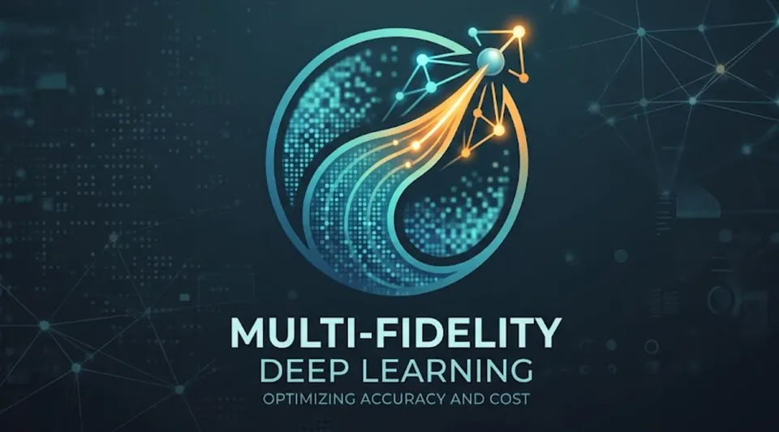

Multi-Fidelity Deep Learning – Reducing Training Costs
Explored how combining a small share of expensive High-Fidelity images with abundant cheap Low-Fidelity data can drastically cut dataset acquisition costs without sacrificing accuracy.
Python, PyTorch, ResNet-18, Optuna, Transfer Learning, EWC, Curriculum Learning
View Details
This project investigates multi-fidelity learning for image classification: how to maximise High-Fidelity (HF) accuracy while minimising the total cost of acquiring training data, by leveraging large volumes of cheap Low-Fidelity (BF) images alongside a small HF set.
- Designed a controlled degradation pipeline (sub-sampling 224→64 px, Gaussian noise σ=0.15, JPEG q60) applied deterministically to simulate realistic BF data across three datasets: Animals-10, Imagewoof, and Intel Image.
- Defined a three-metric cost model (data cost, compute cost, total cost) to rigorously compare strategies on equal footing.
- Implemented and compared four multi-fidelity strategies: Sequential Transfer Learning (BF→HF), Weighted Co-training, Progressive Curriculum Learning, and Elastic Weight Consolidation (EWC).
- Tuned all strategies with Optuna and evaluated over 3 datasets × 3 random seeds on a GPU V100S server for statistically robust results.
- EWC achieved the best HF accuracy, halving the total cost compared to a naive HF-only baseline, consistently across all three datasets.